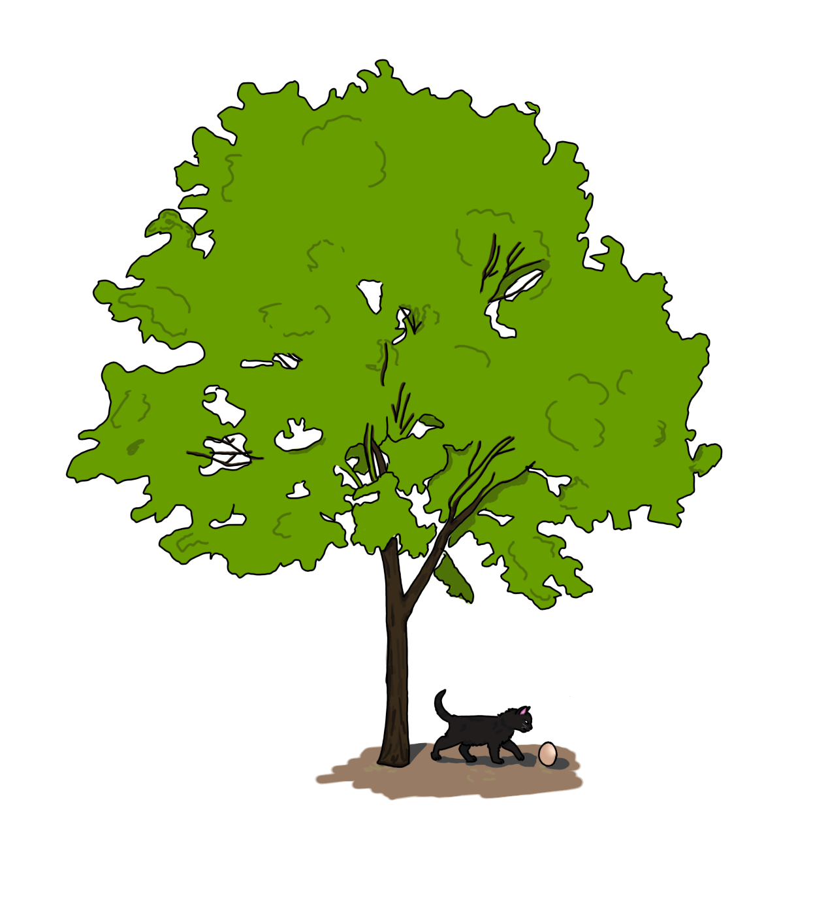

Глава III
Лакунарность
Лето в самом своём разгаре. Солнце печёт как никогда раньше. Лишь в тени можно от него укрыться. Именно туда, в тень небольшой берёзы, направляется наш чёрный котёнок, который вышел прогуляться и уже устал от солнечного пекла.
Котёнок подходит к тени и замечает в траве что-то странное. Это что-то было похоже на камень, однако, в отличие от всех других камней, этот был каким-то черезвычайно гладким, имел очень необычный черно-белый окрас и странную форму.

Котёнок приблизился к странному камню. Нюхает — не пахнет. Трогает — гладкий и очень лёгкий.
— Это точно не камень — думает котёнок, — камни тяжёлые и твёрдые, а этот — совсем хрупкий. Что же это?..
Интерес загорелся в котёнке. Что же это? Главное, как оно называется? Котёнку уж сильно хотелось узнать ответы на эти вопросы, настолько сильно, что все признаки усталости испарились и пекло стало не таким и невыносимым. Он начинает поиск слова, осторожно неся неизвестный камень и направляя свой путь домой, к маме. Она, кажется, знает всё об этом мире...
— Это же полый камень. У него есть оболочка, а внутри неё — один лишь воздух — говорит мама-кошка, — нечасто такой встретишь, тебе повезло...
Мама-кошка нежилась в теньке на окошке, когда котёнка вернулся домой. Он получил ответ, но это был совсем не тот ответ, который он хотел.
— Как же этот камень называется?
— Не знаю, котёнок. Когда я была маленькой, я тоже спрашивала у нашей бабушки как он называется, но она мне так и не дала ответ.
Изначальное весёлое возбуждение сменилось разочарованием. Несмотря на это, лучик надежды ещё не угасал в котёнке. Он оставил прохладную родную комнату и отправился дальше, сопровождаемый заботливым взглядом мамы.
Солнце стоит в самом центре неба — время молокопитья.
И вправду, знакомые рыжий котёнок и белая кошечка пьют во дворе молоко. Сегодня оно особенно вкусно и блаженно. Только оно помогало хоть как-то вынести летний зной.
— Камень, внутри которого ничего нет? — неотчётливо спросил рыжий котёнок, едва отрываясь от питья молока и глядя на необыкновенный камень, — никогда такой не видел.
— Я тоже ничего подобного не встречала, — белая кошечка перестала пить молоко ещё заметив у забора подходящего чёрного котёнка.
Быстро закончив с молоком, рыжий котёнок был уже тут как тут у полого камня.
— Какой лёгкий! — рыжий котёнок стал играться с камнем как с мячиком, водя его лапами по земле.
— Перестань! Вдруг разобьётся! — нервно воскликнула белая кошечка.
Рыжий котёнок смутился и перестал. Необычный камень ещё продолжал катиться, пока он лапой не остановил его.
— Впрочем, пойди к старому коту. Он, кажется, уже лет сто живёт, должен знать как этот камень называется.
Страшно было котёнку идти к старому коту одному. Он попросил сопроводить его, но никто не согласился, даже милая белая кошечка.
Немного подумав, котёнок решил — если он правда хочет узнать слово, значит он будет идти до конца.
Дом, где жил старый кот, находился не так далеко от котёнка, и, несмотря на это, путь туда был долгим. Приходилось идти сквозь обросшую траву под всё так же палящим солнцем.
Котёнок наконец пришёл к старому, как сам кот, дому, окружённому обвалившимся забором. Котёнок легко проник во двор. Твара стоит, не колыхаясь, никого вокруг не видно — тишина. Кажется, ни одной живой души здесь нет.
Дверь в дом оказалась заперта, поэтому котёнку не оставалось ничего, кроме как обходить дом, заглядывая в полуоткрытый окна в надежде встретить старого кота. Он так и сделал, никого дома не оказалось. Он сделал ещё один круг вокруг дома, оставив полый камень у двери и на этот раз мяукая. Никто не окликнулся. Во дворе тоже никого не не было.
С полым камнем в пасте, уставший котёнок плёлся к дому. Последняя его надежда не оправдалась. Солнце уже садилось за землю, темнело и было не так знойно, но котёнку всё так же хотелось спрятаться в теньке. Невзначай, он лёг прямо под ту самую берёзу, где он нашёл этот странный камень. Его он положил на траву около себя.
На берёзе было свито гнездо. В нём сидела грустная птица. Завидев под гнездом котёнка и рядом с ним тот камень, она вдруг обрадовалась, спустилась на землю, встав напротив них. Котёнок, при виде птицы, привстал и в страхе выгнулся назад.
— Спасибо тебе, добрый котёнок! Я долго искала своё яицо, но только ты смог его найти — едва сдерживаясь от порыва счастья говорила птица.
Затем, она растерялась: "Даже не знаю как тебя поблагодарить...". Птица водила взглядом, как будто искала что-то, а потом внезапно припала головой к туловищу, оторвала с себя перо и положила его около котёнка.
— Держи... — напоследок сказала птица и, схватив яицо, улетела обратно в гнездо.
А котёнок всё это время стоял изумлённый и глядел на происходящее перед ним. Он не понимал ни слова, сказанного птицей, — он не знал птичьего — а потому, не понимал и того, почему птица дала ему своё перо, и почему она забрала полый камень, и вообще почему она перед ним так воодушевлённо и живо чирикала.
То, что котёнок таскал с собой весь день, оказалось яицом. Однако этого котёнок не узнал, и для него оно останется полым камнем. Он так и не нашёл слово.
Котёнок встретился с такой вещью, название которой никто не знал. И это не потому, что никто не знал слова, которое эту вещь обозначает, такая ситуация нас не интересует. Это потому, что в языке котов этого слова вообще нет. Такое явление в общем называется лакунарностью, а определённое единичное отсутствие слова — лакуной.
Лакуна — это, по сути, пустое место. И там, где в одном языке пустота, в другом может быть слово. Например, в языке котов слова, обозначающего яицо нет, а в языке птиц — есть. Если брать пример из реальной жизни: в русском языке есть слова "синий" и "голубой", которые обозначают соответствующие синий и голубой цвета; в английском же языке есть только слово "blue", обозначающее синий цвет. Там, где в русском языке слово "голубой", в английском — лакуна.
Но это не значит, что англичане не видят голубого цвета. Вовсе нет, у всех людей (по крайней мере здоровых) зрение и восприятие цвета одинаково.
Присутствие лакуны в языке не означает, что определённого концепта в национальной картине мира нет. Это лишь означает, что нет слова, которое бы его обозначало. Зачастую, для обозначения таких концептов (которым в языке как бы соответствует лакуна, пустота) используются сложные словосочетания: русское "человек, ведущий дневник" соответствует английскому "diarist"; в этой главе котёнок использует словосочетание "полый камень", что соответствует птичьему "яицо".